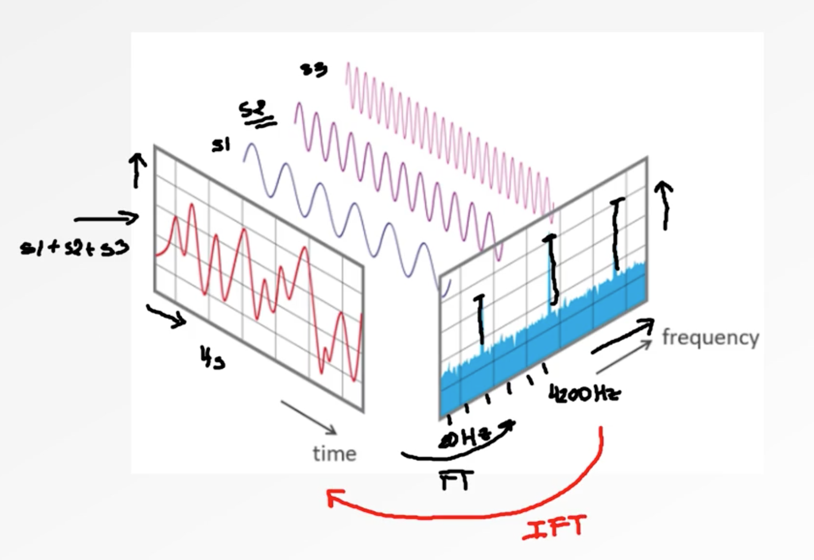
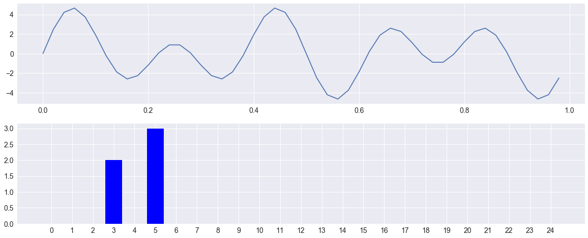
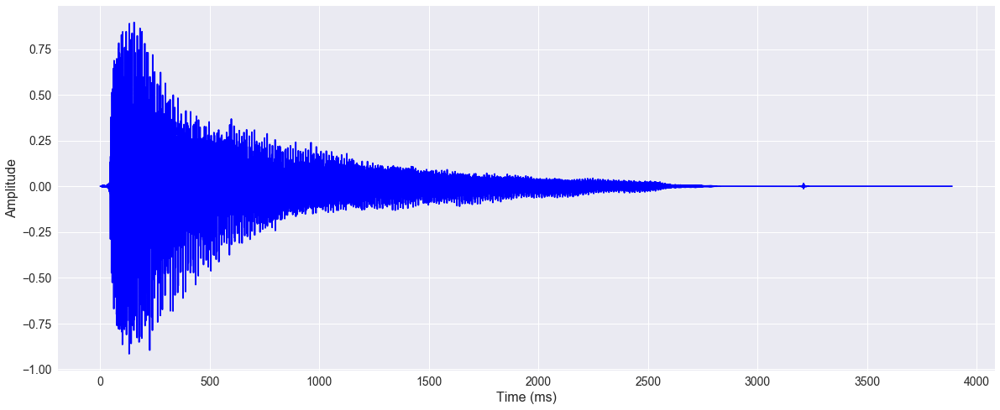
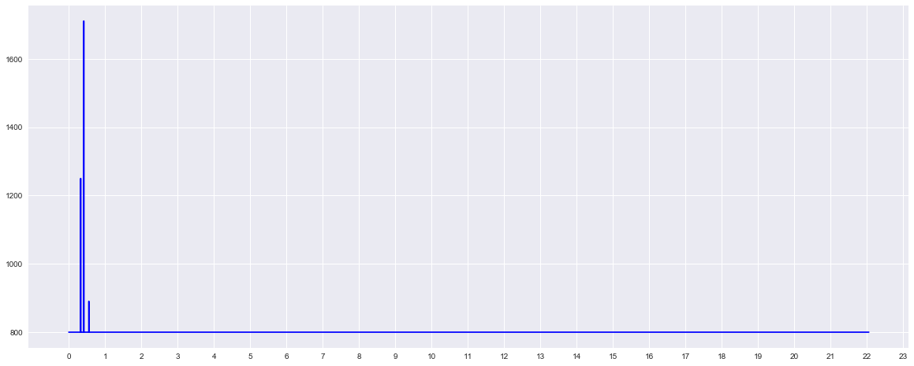
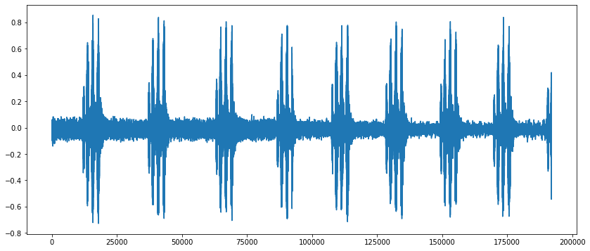
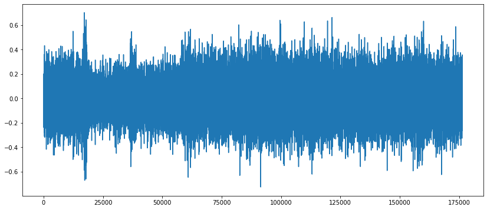
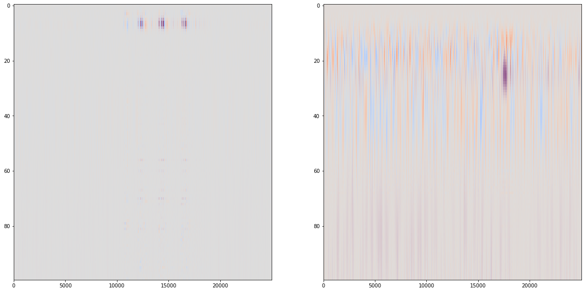
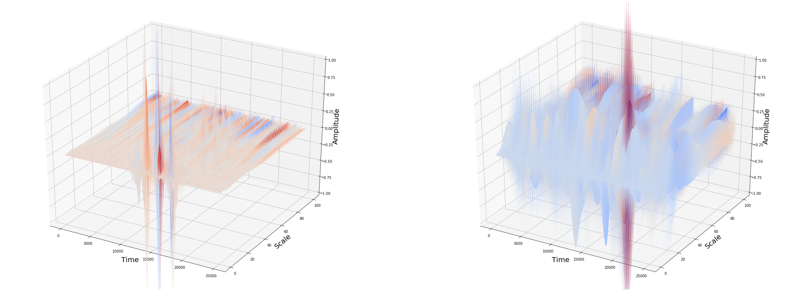

Fourier Transform
The Fourier transform (FT) decomposes a function (often a function of time, or a signal) into its constituent frequencies.
One motivation for the Fourier transform comes from the study of Fourier series. In the study of Fourier series, complicated but periodic functions are written as the sum of simple waves mathematically represented by sines and cosines. The Fourier transform is an extension of the Fourier series that results when the period of the represented function is lengthened and allowed to approach infinity.
The Fourier transform of a function f is traditionally denoted $\hat{f}$, by adding a circumflex to the symbol of the function. There are several common conventions for defining the Fourier transform of an integrable function

If we want to describe a signal, we need three things :
- The frequency of the signal which shows, how many occurrences in the period we have.
- Amplitude which shows the height of the signal or in other terms the strength of the signal.
- Phase shift as to where does the signal starts.
1 | import numpy as np |

Decompose the cord
A special case is the expression of a musical chord in terms of the volumes and frequencies of its constituent notes.
1 | """ |

1 | """ |
[329. 330. 415. 555.]

Wavelet transform
Wavelets have some slight benefits over Fourier transforms in reducing computations when examining specific frequencies. However, they are rarely more sensitive, and indeed, the common Morlet wavelet is mathematically identical to a short-time Fourier transform using a Gaussian window function. The exception is when searching for signals of a known, non-sinusoidal shape (e.g., heartbeats); in that case, using matched wavelets can outperform standard STFT/Morlet analyses.
1 | import os |
1 | zip_file = ZipFile("audio_data.zip") |
The data used for this demonstration comes from the Urban Sounds Dataset. This dataset and its taxonomy is presented in J. Salamon, C. Jacoby and J. P. Bello, A Dataset and Taxonomy for Urban Sound Research, 22nd ACM International Conference on Multimedia, Orlando USA, Nov. 2014.
For simplicity the dataset is sampled and a subset of 20 audio clips from two categories are used - air conditioner (AC) and drill.
1 | ZipFile.namelist(zip_file) |
['audio_data/',
'audio_data/ac/',
'audio_data/ac/101729-0-0-1.wav',
'audio_data/ac/101729-0-0-11.wav',
'audio_data/ac/101729-0-0-12.wav',
'audio_data/ac/101729-0-0-13.wav',
'audio_data/ac/101729-0-0-14.wav',
'audio_data/ac/101729-0-0-16.wav',
'audio_data/ac/101729-0-0-17.wav',
'audio_data/ac/101729-0-0-18.wav',
'audio_data/ac/101729-0-0-19.wav',
'audio_data/ac/101729-0-0-21.wav',
'audio_data/ac/101729-0-0-22.wav',
'audio_data/ac/101729-0-0-23.wav',
'audio_data/ac/101729-0-0-24.wav',
'audio_data/ac/101729-0-0-26.wav',
'audio_data/ac/101729-0-0-28.wav',
'audio_data/ac/101729-0-0-29.wav',
'audio_data/ac/101729-0-0-3.wav',
'audio_data/ac/101729-0-0-32.wav',
'audio_data/ac/101729-0-0-33.wav',
'audio_data/ac/101729-0-0-36.wav',
'audio_data/drill/',
'audio_data/drill/103199-4-0-0.wav',
'audio_data/drill/103199-4-0-3.wav',
'audio_data/drill/103199-4-0-4.wav',
'audio_data/drill/103199-4-0-5.wav',
'audio_data/drill/103199-4-0-6.wav',
'audio_data/drill/103199-4-1-0.wav',
'audio_data/drill/103199-4-2-0.wav',
'audio_data/drill/103199-4-2-1.wav',
'audio_data/drill/103199-4-2-10.wav',
'audio_data/drill/103199-4-2-11.wav',
'audio_data/drill/103199-4-2-2.wav',
'audio_data/drill/103199-4-2-3.wav',
'audio_data/drill/103199-4-2-4.wav',
'audio_data/drill/103199-4-2-5.wav',
'audio_data/drill/103199-4-2-6.wav',
'audio_data/drill/103199-4-2-7.wav',
'audio_data/drill/103199-4-2-8.wav',
'audio_data/drill/103199-4-2-9.wav',
'audio_data/drill/103199-4-4-0.wav',
'audio_data/drill/103199-4-6-0.wav']
1 | audio_data = [] |
1 | len(audio_data),audio_data[0].shape |
(40, (192000, 2))
1 | from collections import Counter |
Counter({0: 20, 1: 20})
1 | # for index in range(len(audio_data)): |
1 | def to_mono(data): |
1 | fig = plt.figure(figsize=(14,6)) |
[<matplotlib.lines.Line2D at 0x159e6f6d8>]

1 | fig = plt.figure(figsize=(14,6)) |
[<matplotlib.lines.Line2D at 0x12fce4be0>]

1 | scales = np.arange(1, 101) |
1 | coeff1.shape, freqs1.shape |
((100, 25000), (100,))
1 | plt.figure(1, figsize=(20,10)) |

1 | import matplotlib.pyplot as plt |

1 | from sklearn.decomposition import PCA |
........................................
1 | X_train, X_test, y_train, y_test = train_test_split(features, labels, test_size=0.20, random_state=0) |
1 | clf = svm.SVC() |
SVC(C=1.0, break_ties=False, cache_size=200, class_weight=None, coef0=0.0,
decision_function_shape='ovr', degree=3, gamma='scale', kernel='rbf',
max_iter=-1, probability=False, random_state=None, shrinking=True,
tol=0.001, verbose=False)
1 | y_pred = clf.predict(X_test) |
Accuracy : 87.50%